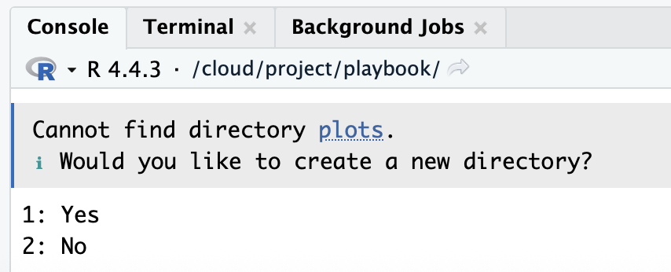
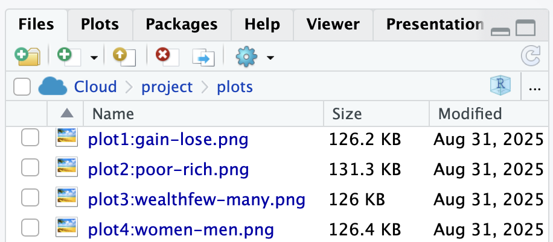

print(plot1_charges_histogram)
ggsave("plots/plot1_charges_histogram.png",
plot = plot1_charges_histogram,
width = 8, height = 5, dpi = 300)30 Write the Results
What every Results section must contain, and how to check it
Abstract
This chapter is the checklist for the Results section of the RD Report and the Final Report. Researchers learn what a Results section is for (what you found, not what it means), how to organize it so it mirrors the Data Analysis Plan, which numbers every result must report, how to save every plot with ggsave() so it can go on the team poster, and what graders look for. It gathers the Required boxes from the test chapters into one place, with a checklist to run before the report is submitted.
Keywords
results, report, checklist, ggsave, APA
Resources Ref’s kickoff: find the Ref before you code
Ref’s kickoff: find the Ref before you code
Ref’s kickoff: find the Ref before you code
Open Project → Open .qmd → Run load-library chunk → Run All Chunks Above → code. If anything looks wrong, use Ref’s Quick Checklist.
ResourcesResources: reporting results
- Frequentist Inference: the four numbers every play reports, and what each one means
- The Results sentence for each test: Compare 2 Groups, Compare 1 Group, Pre/Post, Compare 3+ Groups, Relate 2 Variables, Relate 3+ Variables
- APA Style: numbers and statistics (how to format p, t, M, SD)
- Start My Report: the five required parts of every chunk, and when to show or hide output
30.1 What a Results section is for
The Results section reports what you found. It does not explain what the findings mean, whether they agree with the literature, or what the team should do next; all of that belongs in the Discussion. A reader of your Results should be able to see, for each research question, the plot, the numbers, and one sentence that says what happened, and then move on.
Write it in the past tense, because it describes analyses you ran. Organize it the same way as your Data Analysis Plan (Write the Methods): one subsection per research question, in the same order, with the same names for the variables. If the plan says research question 2 was a two-group comparison of WELLBEING by TREATED_01, the reader expects a subsection with that comparison, that plot, and that test.
ImportantRequired: one block per research question
For every research question in your RD Report and Final Report, the Results section contains, in this order:
- The figure, made with the play that matches the box on the Analysis Map, with a
fig-capthat starts “Figure 1.” and can stand alone, afig-alt, andggsave(). - The descriptives: how many people were in the analysis (the n after missing answers were dropped), and the mean and standard deviation (or the median) of the outcome for each group or variable.
- The assumption check: whether the outcome (or the residuals, for regression) was normal or not, and therefore which line of the box you took (Describe Your Data).
- The four numbers from the test: the test statistic, the p-value, the confidence interval where R gives one, and the effect size (Frequentist Inference).
- One sentence in the form the test chapter gives, that states the direction in plain words (“scored lower than”, “increased from”, “was positively associated with”) and says whether the hypothesis was supported.
The test chapters each have a Required box with the exact list for that test; this box is the general rule.
ImportantImportant: what I look for when I read a Results section
- The numbers match the plot. If the plot shows two bars of about the same height, the text should not say the groups differed.
- The test matches the plan. The test named in the Data Analysis Plan is the test in Results. If you changed your mind after seeing the data, say so in Methods and say why; do not pick the test that gives the result you wanted (Caution: Don’t pick the test).
- Every p has an effect size next to it. A p-value says whether a difference is likely to be real; the effect size says whether it is big enough to matter. A result with only a p is half a result.
- “Not significant” is a result. Report it with the same four numbers and the same care. Do not leave a research question out because nothing was found.
- The code is visible, with the
#source:and#explanation:comments, and nothing else is: nohead(),names(), orView()output, no package startup messages, no warnings you have not read (When to Show and When to Hide). - No interpretation. “Men scored higher than women” is a result. “Men scored higher than women, which suggests that…” is Discussion.
30.2 Save every plot with ggsave()
Every figure in your report is also an image file, because the plots go on your team’s poster. The code that makes this happen is ggsave( ), a function that saves a plot as a .png (or .jpg) image file inside your RStudio Project folder. The pattern is the same for every plot: print it, then save it. Here it is for the histogram from Coding a Plot:
And as a template for your own plots:
print(plot1_SWAPNAME)
ggsave("plots/plot1_SWAPNAME.png",
plot = plot1_SWAPNAME,
width = 8, height = 5, dpi = 300)
ImportantRequired:
ggsave( )
Your RD Report and Final Report must include ggsave( ) for plots, because you will want to easily export these plots and then add them onto your team poster. This is the chapter where you do it, with the plots you make from your team’s real dataset. Here is how it works:
The use of plots/ in the ggsave() code chunk saves the image into a folder called plots inside your project. If you do not have a plots folder yet, the console will ask you whether to create it: type “1” and click return/enter.
In your files tab, click the plots folder to see your saved images.
Then, upload the plot (and your other plots) to your team’s google drive > Team Survey Data > Quant Data > Plots. The image file is in the plots folder inside your Lastname_FRI project folder on your computer.


CautionCaution: Don’t use spaces, colons, or slashes in file names
Use letters, numbers, underscores (_), and hyphens (-) only: plot1_charges_histogram.png or plot1-charges-histogram.png. Do not use spaces, colons, or slashes in a file name. Some computers cannot save or open those files.
GoGo: name every plot
plot#_variables_type
The file and the object get the same name, in three parts: the figure number, the variables (outcome first, then the group or predictor), and the kind of plot: plot1_wellbeing_treated_barplot, plot2_stigma_helpseek_scatter, plot3_effsafe_prepost_raincloud. Lowercase, underscores, no spaces. The number matches “Figure 1”, “Figure 2” in the caption, so the person building the poster can find each file without opening your report, and the chunk label is the same name with hyphens (plot1-wellbeing-treated-barplot).
plot1_wellbeing_treated_barplot <- ggplot(...) + ...
print(plot1_wellbeing_treated_barplot)
ggsave("plots/plot1_wellbeing_treated_barplot.png",
plot = plot1_wellbeing_treated_barplot,
width = 8, height = 5, dpi = 300)30.3 Tables
A table is the right choice when there are more numbers than one sentence can hold: the descriptives for three or more groups, or the coefficients of a regression. Make it with knitr::kable() and give it a caption that starts “Table 1.” and can stand alone, the same rule as for figures (Relate 3+ Variables shows one).
30.4 The Results checklist
Run down this list for each research question before you submit. Then run the plot checklist below it for each figure.
| ☐ | Criteria | Ask yourself |
|---|---|---|
| ☐ | Order | Is there one subsection per research question, in the order of the Data Analysis Plan, using the same variable names? |
| ☐ | Figure first | Does the block open with the figure, and does the text point to it (“Figure 1 shows …”)? |
| ☐ | n | Is the number of people in the analysis reported, after missing answers were dropped (nobs() for a model; the n per group otherwise)? |
| ☐ | Descriptives | Are the mean and SD (or the median) reported for each group or variable? |
| ☐ | Assumption | Does the text say whether the outcome was normal or not, and does the test match that line of the box? |
| ☐ | Four numbers | Test statistic, p, confidence interval (where R gives one), effect size: are all four there? |
| ☐ | Direction | Does the sentence say which group was higher, or whether the relationship was positive or negative, in plain words? |
| ☐ | Hypothesis | Does the block end by saying whether the hypothesis was supported? |
| ☐ | Past tense | Is every sentence about an analysis you ran, not one you plan to run? |
| ☐ | No interpretation | Have you saved “which suggests”, “because”, and “this means” for the Discussion? |
| ☐ | Code shown | Is the code visible with its #source: and #explanation:, and are check chunks (head(), names()) removed or hidden? |
| ☐ | Composites | Is Cronbach’s alpha for each composite reported in Methods, not here (Creating Composites)? |
| ☐ | Tables | Does every table have a caption that starts “Table 1.” and can stand alone? |
| ☐ | Plots saved | Is every figure saved with ggsave() into plots/, with a numbered file name, and uploaded to the team Drive? |
30.4.1 The plot checklist
| Criteria | Ask yourself |
|---|---|
| Data and mapping | Is the cleaned dataset used, with the correct variables on x and y? |
| Geometry | Is this the best plot for the data (e.g., scatterplot for two continuous variables; barplot or boxplot for groups)? |
| Stacked points | If points sit on top of each other, are they jittered, and does the caption say so? |
| Groups | Were very small groups combined or excluded? Does the caption say what was combined or excluded, with the counts? |
| Stats | Is there a line of best fit on a scatterplot? Are there error bars on a barplot? (Error bars are required in the Final Report, not the RD Report.) |
| Axes and labels | Are both axes labeled in plain words (not variable names)? Does each axis cover the full range of the scale? |
| Facets | Would a facet (one panel per group) help answer your research question? |
| Appearance | Is there an accurate title? Is a non-default theme used (the same theme in every plot)? Does color add meaning? |
| Code formatting | Can you read the code without scrolling to the right? Does the plot print without errors or extra output? |
| Figure caption | Does the chunk have fig-cap, starting with “Figure 1.”, “Figure 2.”, and enough detail to stand alone? |
| Alt text | Does the chunk have fig-alt that describes what the plot shows? |
| ggsave( ) | Is the plot saved with ggsave() into the plots folder of your RStudio Project, named plot#_variables_type.png (for example plot1_wellbeing_treated_barplot.png), with the object named the same? |
| Stands alone | Could a reader understand the figure without reading your text? |
| Referenced in text | Does your results paragraph point to it (e.g., “Figure 1 shows the association between …”)? |
Resources Ref’s final whistle: before you quit RStudio
Ref’s final whistle: before you quit RStudio
Ref’s final whistle: before you quit RStudio
Save → Render → Back up to ELN → Quit, Don’t Save workspace. Details: Ref’s Quick Checklist.